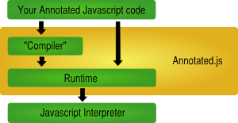

For large, complex Javascript applications or libraries, Annotated.js provides a language extension for expressing the structure & validity of your code. By annotating your regular Javascript code, the Annotated.js runtime provides additional language features like declarative namespaces, class and module macros, and runtime type testing.
Runs directly in the browser, even in external sources - what you see in the IDE is what you get in your browser's debug session. Annotated.js is legal javascript and runs natively in the browser without eval, code rewriting or server-side compilation - it's also fully compatible with popular minifiers, parallel or AJAX-y script loaders, code optimiziers, etc.
Namespaces, Classes, Modules and Mixins define a clean, simple API for defining your application's architecture with compiler-checked rigor. Namespaces are declarative and self-instantiating, reporting conflicts and invalid architectures; Classes, Modules & Mixins let you quickly design a flexible, inheritance based & compiler verified architecture.
Type Testing allows you to define computational constraints which are optionally validated by the runtime. Restrict unintended or unspecified usage of your API, prevent invalid, undefined or NaN values from propagating into your data model & obscuring debugging, test that your application is accessing each interface the way you intended.
Optionally run the compiler offline via node.js & deploy your application with no reflection overhead - the Annotated Runtime minimized is less than 1k, and typically loads 20x-100x times faster
Though feature complete, Annotated.js has not yet reached a stable release, so you will need to check out the source from github:
Download Annotated.jsIn order to use Annotated.js in your Javascript project, you will need to ensure that it is the first script loaded on your page - Annotated will ensure that all further load order dependencies are satisfied.
<head>
<script src="lib/annotated.js"></script>
<!-- Your application's script tags go here ... -->
</head>
Because Annotated.js uses code reflection to accomplish it's magic, Annotated.js API functions do not work like vanilla Javascript functions - they must be embedded in a call to the global function annotated to work.
annotated(function() {
// Your Annotated Javascript code goes here ...
});
Within a annotated block, you can declare Modules and Classes (which will execute asynchronously), as well as write standard javascript (which will execute synchronously).
A Module is simply an object which can be referenced from other Modules or Classes as a dependency - analogous to a module in Ruby or a static class in Java. Modules have the same syntax as Java namespaces, but act just like globally defined Javascript objects - the only restriction being that Modules (unlike Classes) may not have public properties, only functions or objects.
annotated(function() {
Module: Org.App.DateUtils = function() {
this.daysOfWeek = function() {
return [ 'Mo', 'Tu', 'We', 'Th', 'Fr' ];
}
this.printDate = function() {
var today = (new Date()).toString();
console.log('The current date is ' + today);
};
}
Module: Org.App.OtherModule = function() {
console.log(Org.App.DateUtils.daysOfWeek()[2]);
} // prints 'Wed' on pageload
});
A Class is simply a Javascript constructor function attached to a global object - analagous to Ruby or Java classes. Any properties or functions declared in a class will only be accessible once the Class is insantiated with the 'new' keyword, and any private members will be private to that instance - identically to a standard Javascript Object.
annotated(function() {
Class: Org.App.MyClass = function() {
this.counter = 0;
this.increment = function() {
this.counter ++;
};
}
Module: Org.App.MyClass = function() {
var instance = new Org.MyApp.MyClass();
var otherInstance = new Org.MyApp.MyClass();
console.log(instance.counter); // prints 0
instance.increment();
console.log(instance.counter); // prints 1
console.log(otherInstance.counter); // prints 0
}
});
That's it! Annotated.js does the heavy lifting for you.
Annotated.js supports mixins via the mixin annotation - analagous to Ruby mixins.
annotated(function() {
Class: Org.App.Cat = function() {
Mixin: Org.App.Animal;
}
// You can alias mixins, too!
Class: Org.App.Dog = function() {
Mixin: var __super__ = Org.App.Animal;
this.speak = function() {
__super__.speak();
console.log(" subclass Dog");
}
}
Module: Org.App.Animal = function() {
this.speak = function() { console.log("Animal"); }
}
Module: Org.App.Main = function() {
var cat = new Org.App.Cat();
var dog = new Org.App.Dog();
cat.speak(); // prints "Animal"
dog.speak(); // prints "Animal subclass Dog"
}
});
When you mixin a class, Annotated.js will instantiate an instance of this class for you regardless of whether or not you provide constructor arguments.
annotated(function() {
// With constructor args
Class: Org.App.Cat = function() {
Mixin: Org.App.Animal('meow');
}
// Without constructor args
Class: Org.App.Dog = function() {
Mixin: Org.App.Animal;
}
Class: Org.App.Animal = function(sound) {
sound = sound || 'woof';
this.speak = function() { console.log(sound); }
}
Module: Org.App.Main = function() {
var cat = new Org.App.Cat();
var dog = new Org.App.Dog();
cat.speak(); // prints "meow"
dog.speak(); // prints "woof"
}
});
Annotated.js has an annotation shortcut for runtime type testing - a runtime exception will be thrown if the the arguments to a Constructor or Method do not match their annotated types.
annotated(function() {
Class: Org.App.Car = function(manufacturer, make, year) {
manufacturer :String;
make :String;
year :Number;
this.honkHorn(times) {
times :Number;
for (var i = 0; i < times; i ++) {
console.log(
"A " + year + " "
+ manufacturer + " "
+ make + " honks!"
);
}
}
}
});
Currently recognized types are Object, Array, String, Number, Function, Boolean and any declared Module or Class. Values that are undefined or null will not typecheck if they are annotated.
For stronger control over your code's usage & organization, Annotated.js' Compiler includes a strict mode which adds additional dependency safety and required explicit dependency declaration. Strict mode is enabled via a Annotated.js annotation.
annotated(function() {
Strict: true;
// your code goes here ...
});
You need only apply this annotation once, in any annotated code block; once set, all modules and classes in all scripts will be treated strictly. In strict mode, dependencies must be declared explicitly with the Import annotation:
annotated(function() {
Strict: true;
Module: Org.App.Cat = function() {
Import: Org.App.AnimalUtils;
Import: var alias = Org.App.BathUtils;
this.meow = function() {
Org.App.AnimalUtils.say("Meow, bitches!");
};
this.wash = alias.wash;
}
// This module will cause your application to error on load,
// as it contains a reference to Cat with no corresponding
// Import
Module: Org.App.Invalid = function() {
Org.App.Cat.meow();
}
});
If application start time is critical for your deployed application, you can calculate an Initialization Record for your application offline, then include the generated ir.js file in your application's head tag to eliminate the overhead associated with startup overhead - providing the same speed-up a compilation step would provide, while preserving 1:1 code correspondence in the IDE and browser.
You must configure your application's deploy scripts to generate an ir.js file and include it in the generated page. To generate such a file:
Install Node.js & NPM
'npm install'
'node node_src/preprocess.js' followed by a list of directories/files you want to analyze.
Include the resulting script ir.js in your application's head tag, immediately after annotated.js
Buckle your seatbelts (because a high performance sportscar is an appropriate metaphor for the loadtime speedup your application will experience)
If you would like to hack on Annotated.js, you can compile the code yourself with node.js:
cp lib/annotated.js .
node src_node/compile.js src_annotated
This will overwrite the annotated.js in your project root with the precompiled library. You can then use the resultant annotated.js to run the compilation again:
node src_node/compile.js src_annotated
Note that the compiler currently will not work correctly on most other applications, as it only recognizes a restricted subset of Annotated.js necessary for self-hosting